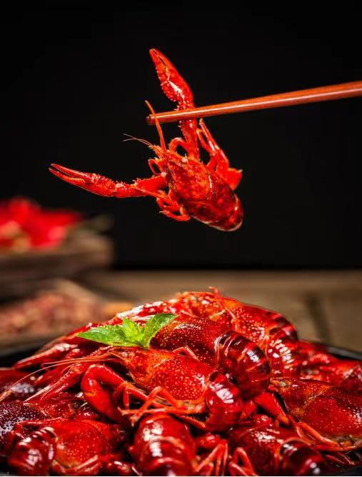
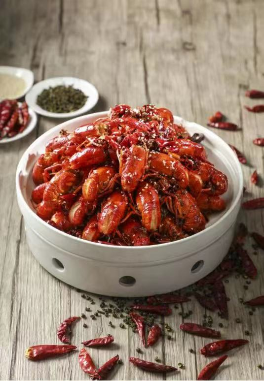
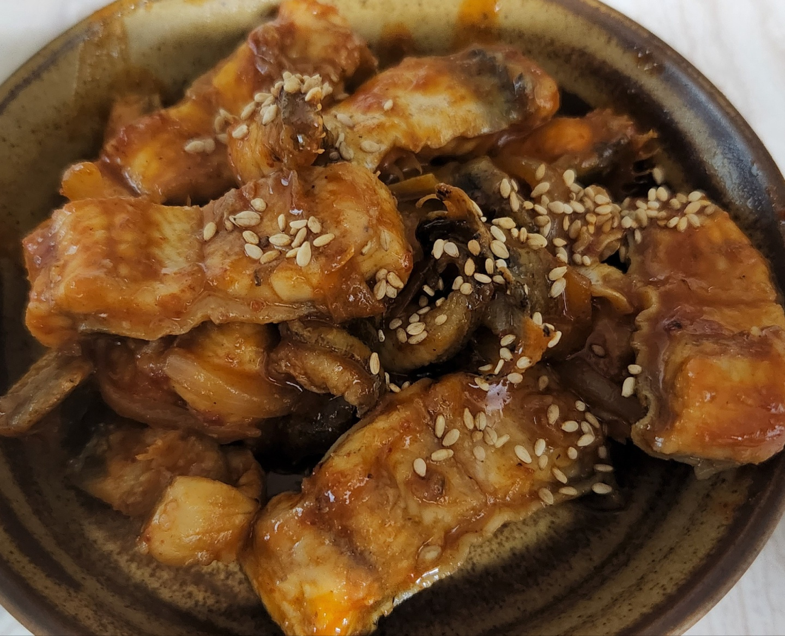
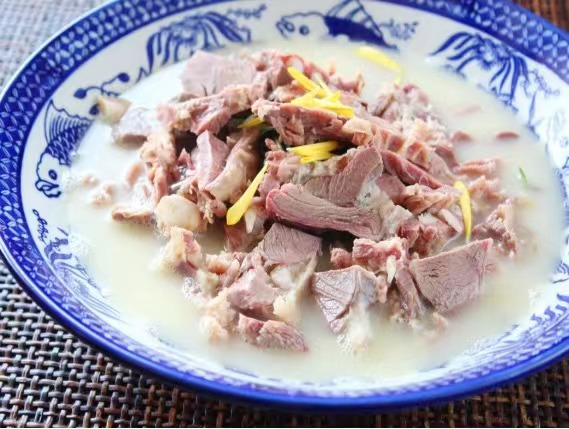

Xuyi Crayfish have a bright red shell, fresh, tender
meat. It is a delicacy of vibrant colors, rich aromas and
a strong taste

---Spicy Crayfish---
Braised Spicy Crayfish, praised as the ‘Soul of Summer,’ are
also irresistible. Stir-fried with chili, the white and tender meat
dipped in red oil is an explosion on the taste buds.

---Braised Eel---
A skilled Huaiyang Cuisine chef can make more than 100 dishes with
eel. One of the most famous is Braised Eel in Brown Sauce. It is a first
course hot dish served and is the 'No.1 Dish of the Founding of the Nation.'

---Mutton Soup---
Mutton Soup is one of the traditional dishes in Huaiyin District. Half
soup, half meat, the meat is tender but not scattered, and falls of the
bone – delicious, aromatic and refreshing, with a long-lasting aftertaste.

---Huai'an Snack---
Huai'an Tea Refreshment is a famous Huaiyang Cuisine dim sum.
The deep-fried dough sticks are as thin as thread, as yellow as
gold and linked as circles. Sweet and crispy with a light salty flavor,
this is a dish suitable for all ages.